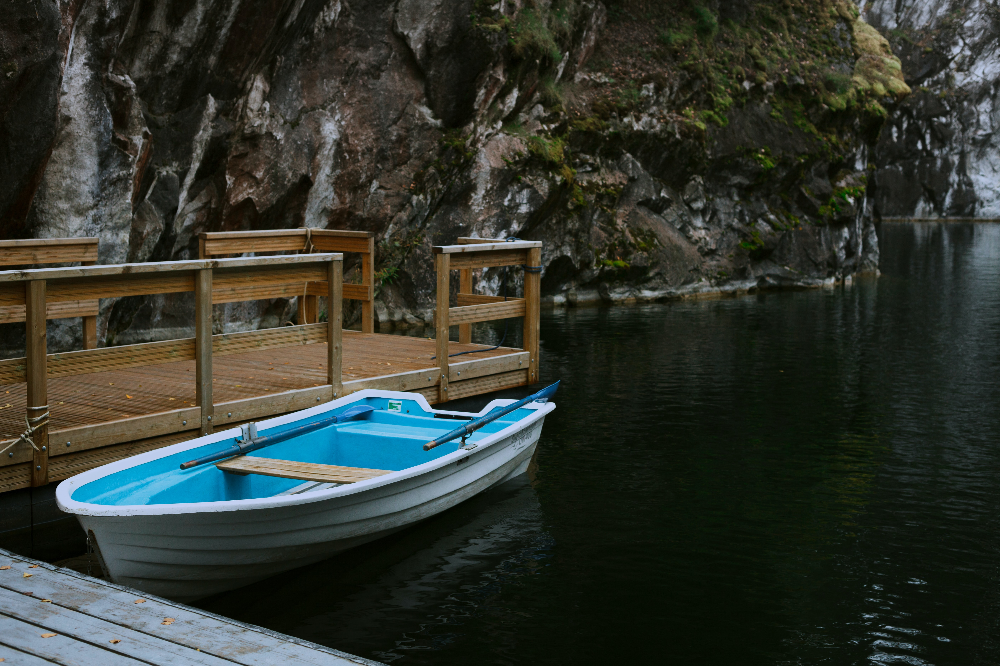

An alternate version of the puzzle shown when the hunt is complete.
This is useful for interaction puzzles where the interaction instructions no longer make sense. Or they could be useful for interactive puzzles where our backend is no longer working.
| Source | Image |
| Puzzle directory | |
| Puzzle sub-directory | |
| Solution directory | |
| Posthunt directory |  |
| Round directory | |
| Round directory | |